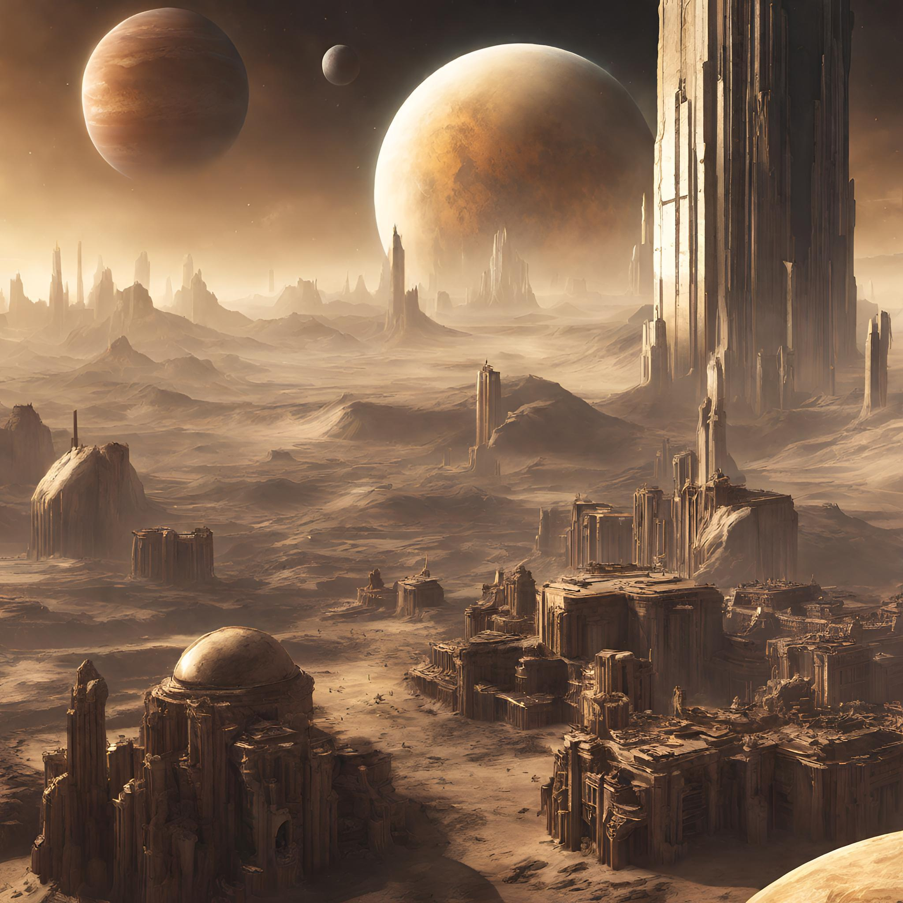
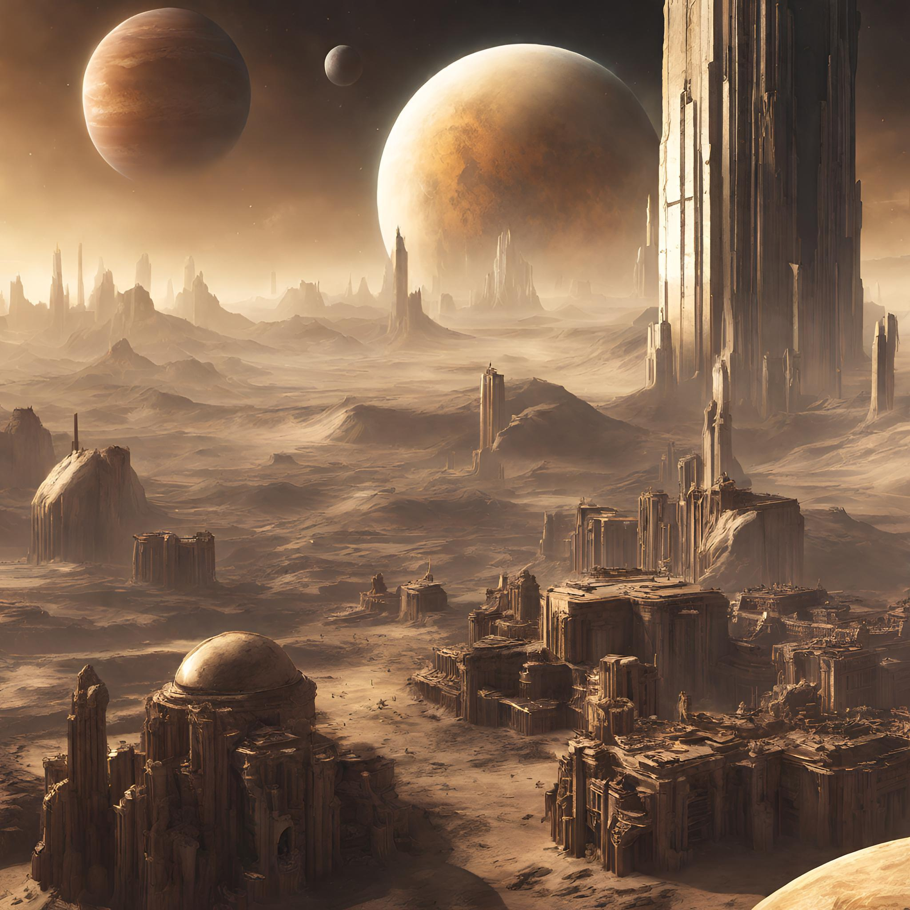

Aims and Objectives
- Provide information and education about Titan's unique characteristics and scientific significance.
- Promote awareness of space exploration and the study of celestial bodies.
- Encourage scientific research and collaboration on Titan-related projects.
Overview of Titan
- Titan is the only world besides Earth that has standing bodies of liquid, including rivers, lakes, and seas, on its surface.
- Like Earth, Titan’s atmosphere is primarily nitrogen, plus a small amount of methane. Titan's atmosphere is mostly nitrogen (about 95 percent) and methane (about 5 percent), with small amounts of other carbon-rich compounds.
- Titan follows an earthlike cycle of liquids raining from clouds, flowing across its surface, filling lakes and seas, and evaporating back into the sky (akin to Earth’s water cycle).
- Titan is also thought to have a subsurface ocean of water.
 


 Previous
Next
Previous
Next
Demo Content
This is your plain container with demo content. You can add any text, images, or other elements you want here to provide additional information or context related to Titan.